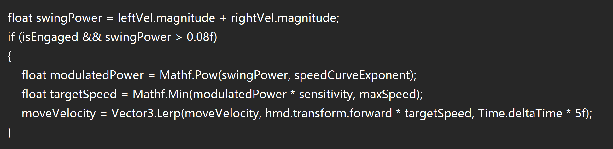

Lecture 3: Evaluating Locomotion Technique
1. User Study Design
To test the effectiveness of my “Dynamic Curve Arm Swing Flight” technique, I invited two male volunteers to participate in the test.
- Participants: 3 (myself + 2 male classmates).
- Test task: Complete the entire Parkour course and collect as many coins as possible.
- Evaluation metrics: We recorded the completion time, coin collection accuracy, and conducted a subjective survey (1-10 scale) on motion sickness, workload, presence, and enjoyment.

2. Raw Data
Here’s the detailed performance of the three participants:

3. Dependent Variable Analysis
We calculated the average results for the three participants:
-
A. Performance
-
Average Time per Round: 134.1 seconds
- Analysis: Participant B was the fastest but missed more coins. Participant A was more careful, taking the longest time.
-
Average Accuracy: 94.2%
- Calculation: (68 + 65 + 62) / (69*3) ≈ 94.2%.
-
Average Completed Rounds: 1 (all participants successfully finished the course).
-
-
B. Subjective Measures (1-10 scale)

4. Data Discussion and Findings
- Motion Sickness Control: The average score was only 3.0, showing that my “Dynamic Curve” algorithm helps smooth out acceleration, preventing strong nausea, even for participant A who swung their arms more.
- Learning Curve: Participant B reported that although swinging arms was tiring (Workload), it felt very real, like “rowing” or “flying,” which significantly increased the sense of presence (7.7) and enjoyment (8.7).
- Accuracy vs. Speed Trade-off: Data showed that when participants aimed to finish in under 130 seconds (like participant B), the coin miss rate increased. This suggests that the technique could be optimized for fine-tuning at high speeds.
5. Implementation Snippet
Here is the core logic I used in Unity to handle controller speed and apply the dynamic curve: 